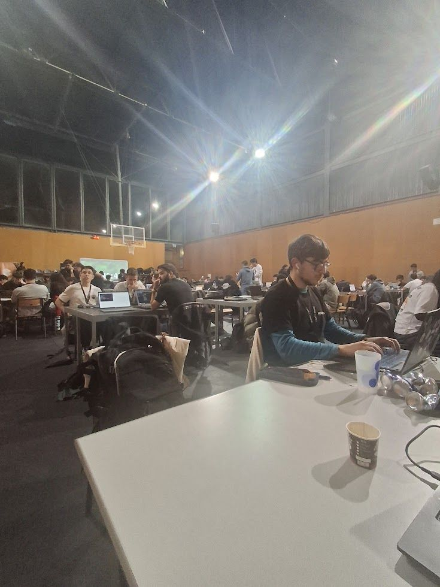
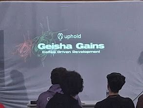
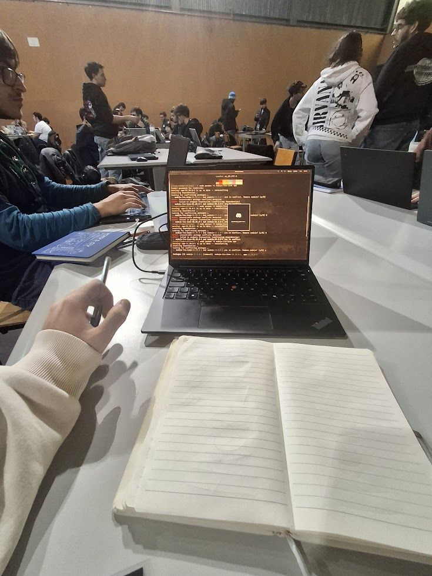
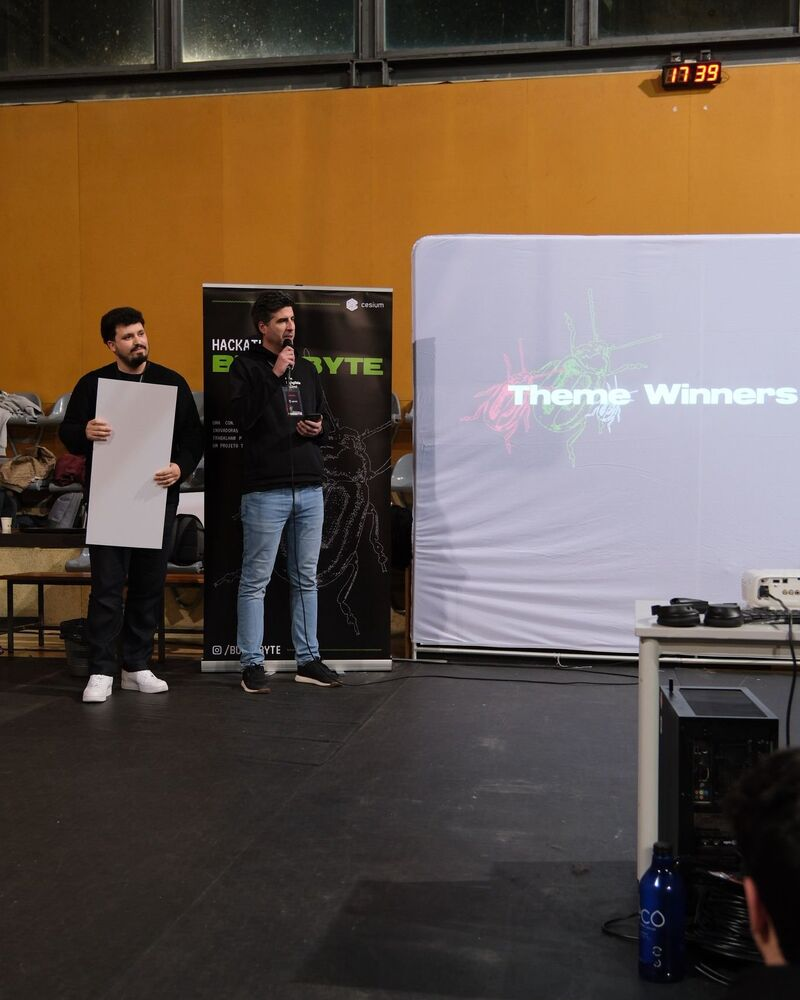
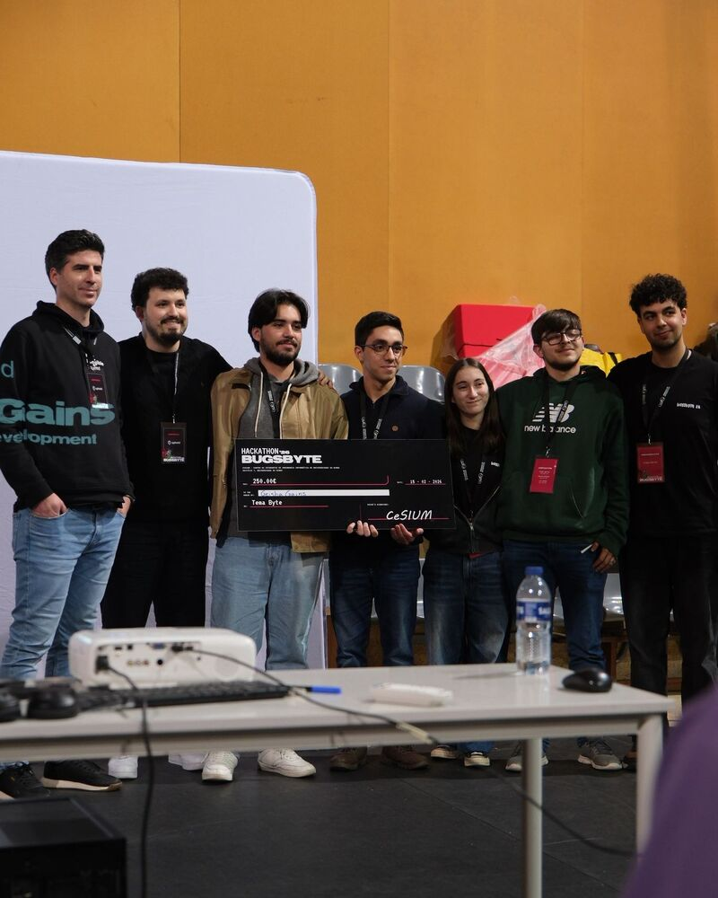

BugsByte 2026, hosted by CeSIUM, was a 48-hour hackathon and my first. As someone used to the pressure of live music performances, I thought I had a decent tolerance for working under time constraints. Turns out, bridging volatile financial data with real-time AI is a different kind of pressure entirely.
I teamed up with three friends from the University of Minho: Beatriz Campinho, Diogo Duarte, and Miguel André Leal Santos. We went in with one goal: build something functional and useful before time ran out.


Our project, Geisha Gains: War Room, came from a shared interest in crypto trading. Rather than building another generic dashboard, we wanted to create a focused cockpit for strategic decision-making. The project was supported by mentorship from Uphold, which helped shape both the scope and direction of what we built.
There is a common tendency in software design to over-polish interfaces, burying utility under layers of gradients and unnecessary animation. For Geisha Gains, we went the opposite direction: a brutalist, stripped-back UI.
In the context of a "War Room," a trader needs clear signals, not decorative charts. We prioritized what we called "strategic intelligence" over generic market metrics. The system uses AI to filter and evaluate real-time financial news, then assesses event severity based on a user's risk threshold and investment profile. It outputs direct, actionable suggestions: hold during minor market shifts, or trigger total liquidation in extreme scenarios.
The design philosophy was simple: respect the user's cognitive load. Give them the raw data they need to make fast, confident decisions without having to dig through noise.
We needed a stack that could handle real-time data without falling apart. Here is what we used:
We chose this architecture because we wanted to write code that could survive past the hackathon. Even under time pressure, we tried to build with intent rather than just throwing things together.
Every project has a moment where things nearly fall apart. Ours came in the final ten minutes.
We tried to implement Docker to ensure environment parity and avoid the classic "works on my machine" problem. Instead, we ran straight into a wall of configuration issues that threatened to break our entire demo.
The instinct was to push through and fix it. But with ten minutes left, the practical choice was to rebase to a previous stable version. We killed a feature to save the project.
It was a useful lesson: knowing when to simplify and fall back to something stable is often more important than chasing the perfect setup. A working demo beats a broken one with better infrastructure.

The outcome of Geisha Gains was directly tied to how well we worked together. Beatriz, Diogo, Miguel, and I had the advantage of already knowing each other well from campus. That familiarity made it easier to divide work, communicate quickly, and pivot when something was not working.
That collaboration paid off: we won the Best Byte Theme prize from Uphold, taking home €250. The prize was a great milestone, but the more lasting takeaway was seeing that a small, coordinated team can deliver a working product under real constraints.


As a second-year student, this hackathon reinforced something I keep coming back to: you have to get the basics right before you can build anything meaningful. Clean code and solid architecture come first. Integration and logic come second. Complex systems come last.
This experience fits into the bigger picture of where I want to go, which is toward a Master's in AI and Machine Learning. Whether it is writing code for a real-time financial tool or arranging a track for my band Solmane, the process is similar: build carefully, test often, and know when to simplify.
When your "perfect" solution fails with ten minutes on the clock, the real question is whether you have the discipline to step back and ship something that works.